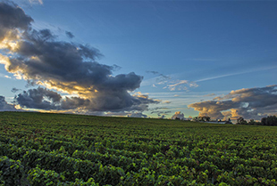

.png)
拉斐罗斯柴尔德古堡
"拉菲拥有一个灵魂，一个美丽的灵魂，温柔且大方。拉菲将土壤幻化成梦想。拉菲本就是和谐的体现，这是一种由人与自然之间达成的和谐。因为，若没有我们辛勤的葡萄农，一切都是虚无。"
.png)
拉斐罗斯柴尔德珍宝
两酒庄酿造工艺完全相同，皆以传统为依托，严格控制单位产量，人工采摘。一年四季，葡萄园中的大量工作都是手工完成。化肥的使用量极少，甚至没有。一些天然肥料的使用可以让葡萄藤达到较高的年龄，一般来说，当葡萄树超过80岁高龄时，他们就会心情沉重地将其连根拔除。
葡萄园分布在三大区域：围绕城堡的山丘、城堡西面的卡许阿德台地以及比邻圣埃斯泰夫村一块约4.5公顷面积的田块。葡萄园面积为112公顷，朝向好，日照充足，底土为第三纪石灰岩，覆盖一层厚厚的细砾石，混有风成砂，提供了极为优越的排水条件。
葡萄品种：卡本妮苏维翁（70%）、梅洛（25%）、卡本妮弗朗克（3%）以及小维尔多（2%）。
葡萄藤平均年龄：39岁，不过须指出的是，那些不足10岁的年轻葡萄树不用于培养顶级酒。也就是说，出产正牌酒的葡萄树平均年龄在45岁左右。一片名为“采石场”田块上的葡萄最为高龄，栽种于1886年。
酒庄管理：由于拉菲古堡与杜哈米隆古堡毗邻，从1962年起，两处酒庄由同一支小组管理。波尔多古堡系列技术总监埃里克•科勒宏观帷幄，酿酒师克里斯托弗·孔杰和葡萄园主管路易·加雅从旁协助。
拉菲古堡于2010年完善了酒庄的硬件设施，建造了两个容纳几十个小容量发酵罐的酿酒车间。一个梅洛酒窖（50至125百升的水泥发酵槽），来专门酿制不同地块上产出的梅洛葡萄。一个分区酒窖所用的橡木桶全部来自葡萄园自己的制桶厂，在制桶过程中根据不同葡萄酒特点的需求配有特殊的“烘烤”程度。12月时，每个酒罐都要经历几次尝酒以严格挑选出顶级品质的佳酿。次年3月第一次滗酒，此时进行调配。之后进入酒窖陈酿，需时18到20个月，陈酿期间还要经历一系列滗酒作业，以分离酒与酒渣。最后，为了去除剩余的那些悬浮颗粒，装瓶前还要进行“下胶”，即在每桶酒中加入四至六个打成雪花状的蛋清以使其凝结并沉至桶底。6月份，由拉菲古堡自己装瓶，所有酒皆一次灌装完毕。
收成之后，熟于各田块的葡萄被分开置入不同的酿酒罐中独立进行发酵，以期在最初阶段可以保留各自的风土特征。今天的拉菲古堡将传统工艺与现代技术进步相互补足，发酵过程在两个酿酒车间内进行：传统车间内为橡木发酵酒罐，现代车间内为不锈钢酒罐，配有降温和加热的自动化系统，可对温度进行集中调控。
酒精发酵结束后，要经过第一次品酒，决定让精酒，即“自流酒”从酒槽中流出。果渣则会进行单独压榨，从而得到“压榨酒”。之后，被称为苹果酸乳酸发酵的第二轮发酵过程在酒罐中进行，这一发酵过程结束后，葡萄酒将会被分批装入橡木桶中。
拉菲古堡的环形陈酿酒窖于1987年在建筑师理查德·鲍费尔的主持下建造完成，主要用于第二年的熟成。该酒窖以独特八角设计和由16个列柱支撑的拱顶为创新之处，可容纳2200个橡木桶。
（30至70百升的不锈钢发酵槽），主要用于苹果酸乳酸发酵（二次发酵），以便在有所需求的情况下将分地块挑选的过程延伸至所有批次葡萄酒发酵结束，无论是卡本妮还是梅洛。
为确保葡萄酒的真实性，自2012年2月起，所有“拉菲罗斯柴尔德古堡”和“拉菲罗斯柴尔德珍宝”葡萄酒的瓶盖处都加贴了认证密封章。 密封章由一组“气泡代码”组成，独一无二且无法复制，每组气泡代码都与一组字母数字代码相连。 拉菲罗斯柴尔德集团为有效打击假酒，保护消费者权益，特推出此防伪系统。